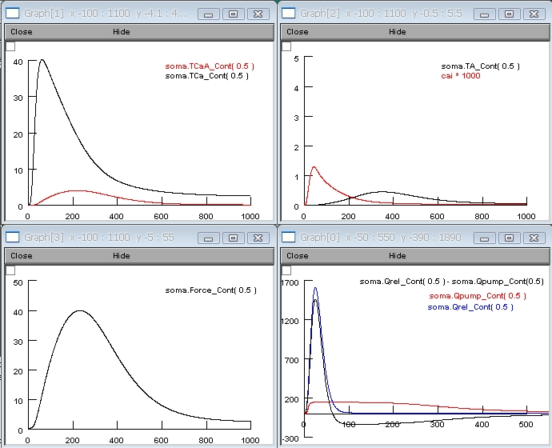

This model of cardiac sarcomere dynamics linked to calcium kinetics is implemented and modified for Neuron by Francois E. Gannier and Claire O. Malecot from University of Tours - FRANCE Physiologie des Cellules Cardiaques et Vasculaires email address: francois.gannier@univ-tours.fr It is based on the paper by : Negroni JA & Lascano EC (1996) A cardiac muscle model relating sarcomere dynamics to calcium kinetics. J Mol Cell Cardio 28:915-929 [PubMed] this is a now classic model of contraction which has been added in some recent models (eg : kyoto model (2003), Okada model (2005)) it uses a four-state combination to show the relation between C-Troponin, calcium, cross-bridges and Force. The orginal model was modified to allow several stimuli with self-chosen frequency. (This allows to reproduce a staircase phenomenom) To run the simulation auto-launch the model from modeldb or download and extract the archive and then compile the mod files under: unix/linux: ----------- type nrnivmodl in the NegroniLascano folder and then nrngui mosinit.hoc mswin: ------ run mknrndll and then double click on mosinit.hoc MAC OS X: -------- Drag and drop the NegroniLascano folder onto the mknrndll icon. Drag and drop the mosinit.hoc file onto the nrngui icon. Once the simulation starts it recreates a figure similar to Fig. 2 (shown as three panels for clarity)& 3 of the original paper. 